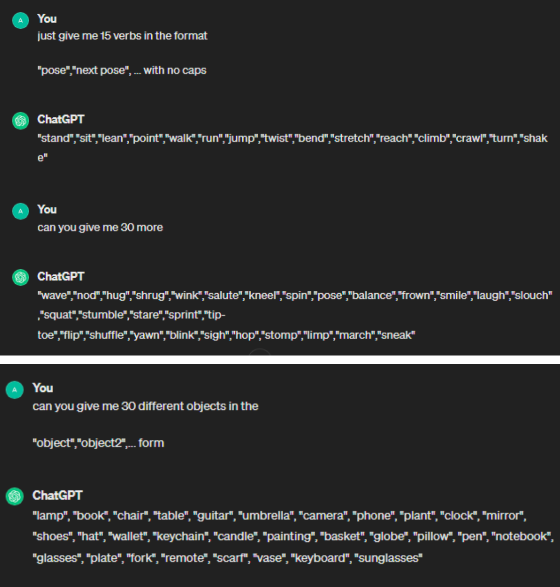

Experiment 6 - Grammars and Text Art
Imitate
Immediately I was drawn to the idea of doing a grammar based project. I was in a Interactive Storytelling class previously and we worked on making a
highschool drama story using grammars in Step, so I have a bit of experience. The first thing that I thought could be fun to make is my
own personalized Drawing Prompt Generator. I use these occasionally when I don’t know what to draw,
so I think it would be cool to create my own that includes my personal characters/things I specifically like to draw.
A few website examples:

Goals for this project:
- A button to click to generate different categories of prompt like the examples in the website
- A couple dozen different iterations of prompts
- Character/OC
- In Pose
- With Context
Integrate
First using the format from the JSON Tracery Example from the slides and Wes Modes Clickbait Article examples, I threw down some initial ideas.
With a simple mouse click, I’m clearing the text and replacing it with something different. It’s fairly simple, but I do want to simulate buttons instead of just any mouse click.
100000% have to improve my sentence structure haha, but the idea is there. Let’s do some fun UI stuff.
Pausing on the UI elements, I knew I had to have more differing responses. I was struggling to think of things outside of what I was immediately seeing, so I went to ChatGPT! To generate verbs, locations, and sentences for me!

Innovate
SO ! on my journey to make it prettier I decided to
- 1. Give it a Button
- 2. Give it a Menu
It’s still kind of lame tho, and the button isn’t actually mapped to only make a new prompt when you click on the “new prompt button” so it’s not even a button at all really.
Also I want the menu to be cooler.
I thought having something simple would be nice, I found this twinkling stars example on Open Processing Stars at night twinkle by Mascaria: link here: https://openprocessing.org/sketch/1986668

Boom bada boom here we got a funny little menu screen.
And also the button darkens to simulate a press. I had it as a mouse click, but I changed it to be a key press just for simplicity. Plus now I don’t have to track where the user is clicking! So that’s a bonus for me.
Reflection
Each person that worked on the code should reflect on the process, the difficulties, and the successes of the experiment. Here's where you can put your reflections.
- What part of the project you contributed
- A reflection on your work and the work of the team
- Brief highs and lows
I was the only one who worked on the project. So I contributed everything, with a bit of help from Chat GPT and code from Mascaria and Wes Modes Tracery example from the lecture.
My work was pretty okay! I like how it came out in the end, I wish the sentences were a bit more put together, but I think it gives it a lot of charm.
By far the most annoying part was putting the sentences together. I was struggling to come up with verbs and phrases and ways to split the prompts into catagories that weren't too repetivitve. However, I think it came out alright in the end. The high was definitely seeing the final product and clicking through the different prompts. I had a fun time reading through the combinations. Particularly any that included the character "They".